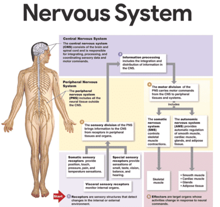
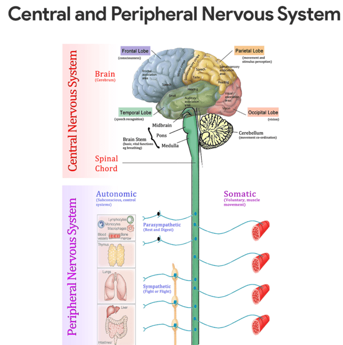
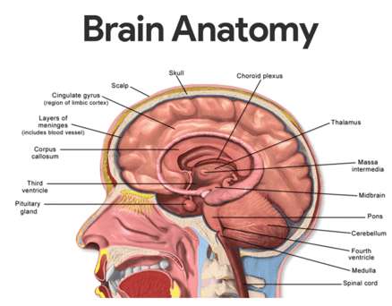
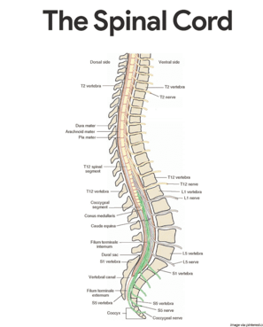

Functions of the Nervous System
To carry out its normal role, the nervous system has three overlapping functions.
1. Monitoring changes. Much like a sentry, it uses its millions of sensory receptors to monitor changes occurring both inside and outside the body; these changes are called stimuli, and the gathered information is called sensory input.
2. Interpretation of sensory input. It processes and interprets the sensory input and decides what should be done at each moment, a process called integration.
3. Effects responses. It then effects a response by activating muscles or glands (effectors) via motor output.
4. Mental activity. The brain is the center of mental activity, including consciousness, thinking, and memory.
5. Homeostasis. This function depends on the ability of the nervous system to detect, interpret, and respond to changes in the internal and external conditions. It can help stimulate or inhibit the activities of other systems to help maintain a constant internal environment.
Anatomy of the Nervous System
The nervous system does not work alone to regulate and maintain body homeostasis; the endocrine system is a second important regulating system.

Organization of the Nervous System
We only have one nervous system, but, because of its complexity, it is difficult to consider all of its parts at the same time; so, to simplify its study, we divide it in terms of its structures (structural classification) or in terms of its activities (functional classification).
Structural Classification
The structural classification, which includes all of the nervous system organs, has two subdivisions- the central nervous system and the peripheral nervous system.
• Central nervous system (CNS). The CNS consists of the brain and spinal cord, which occupy the dorsal body cavity and act as the integrating and command centers of the nervous system
• Peripheral nervous system (PNS). The PNS, the part of the nervous system outside the CNS, consists mainly of the nerves that extend from the brain and spinal cord.

Functional Classification
The functional classification scheme is concerned only with PNS structures.
• Sensory division. The sensory, or afferent division, consists of nerves (composed of nerve fibers) that convey impulses to the central nervous system from sensory receptors located in various parts of the body.
• Somatic sensory fibers. Sensory fibers delivering impulses from the skin, skeletal muscles, and joints are called somatic sensory fibers.
• Visceral sensory fibers. Those that transmit impulses from the visceral organs are called visceral sensory fibers.
• Motor division. The motor, or efferent division carries impulses from the CNS to effector organs, the muscles and glands; the motor division has two subdivisions: the somatic nervous system and the autonomic nervous system.
• Somatic nervous system. The somatic nervous system allows us to consciously, or voluntarily, control our skeletal muscles.
• Autonomic nervous system. The autonomic nervous system regulates events that are automatic, or involuntary; this subdivision, commonly called involuntary nervous system, has two parts: the sympathetic and parasympathetic, which typically bring about opposite effects.
Nervous Tissue: Structure and Function
Even though it is complex, nervous tissue is made up of just two principal types of cells- supporting cells and neurons.
Supporting Cells
Supporting cells in the CNS are “lumped together” as neuroglia, literally mean “nerve glue”.
• Neuroglia. Neuroglia include many types of cells that generally support, insulate, and protect the delicate neurons; in addition, each of the different types of neuroglia, also simply called either glia or glial cells,has special functions.
• Astrocytes. These are abundant, star-shaped cells that account for nearly half of the neural tissue; astrocytes form a living barrier between the capillaries and neurons and play a role in making exchanges between the two so they could help protect neurons from harmful substances that might be in the blood.
• Microglia. These are spiderlike phagocytes that dispose of debris, including dead brain cells and bacteria.
• Ependymal cells. Ependymal cells are glial cells that line the central cavities of the brain and the spinal cord; the beating of their cilia helps to circulate the cerebrospinal fluid that fills those cavities and forms a protective cushion around the CNS.
• Oligodendrocytes. These are glia that wrap their flat extensions tightly around the nerve fibers, producing fatty insulating coverings called myelin sheaths.
• Schwann cells. Schwann cells form the myelin sheaths around nerve fibers that are found in the PNS.
• Satellite cells. Satellite cells act as protective, cushioning cells.
Neurons
Neurons, also called nerve cells, are highly specialized to transmit messages (nerve impulses) from one part of the body to another.
• Cell body. The cell body is the metabolic center of the neuron; it has a transparent nucleus with a conspicuous nucleolus; the rough ER, called Nissl substance, and neurofibrils are particularly abundant in the cell body.
• Processes. The armlike processes, or fibers, vary in length from microscopic to 3 to 4 feet; dendrons convey incoming messages toward the cell body, while axons generate nerve impulses and typically conduct them away from the cell body.
• Axon hillock. Neurons may have hundreds of the branching dendrites, depending on the neuron type, but each neuron has only one axon, which arises from a conelike region of the cell body called the axon hillock.
• Axon terminals.These terminals contain hundreds of tiny vesicles, or membranous sacs that contain neurotransmitters.
• Synaptic cleft. Each axon terminal is separated from the next neuron by a tiny gap called synaptic cleft.
• Myelin sheaths. Most long nerve fibers are covered with a whitish, fatty material called myelin, which has a waxy appearance; myelin protects and insulates the fibers and increases the transmission rate of nerve impulses.
• Nodes of Ranvier. Because the myelin sheath is formed by many individual Schwann cells, it has gaps, or indentations, called nodes of Ranvier.
Classification
Neurons may be classified either according to how they function or according to their structure.
• Functional classification. Functional classification groups neurons according to the direction the nerve impulse is traveling relative to the CNS; on this basis, there are sensory, motor, and association neurons.
• Sensory neurons. Neurons carrying impulses from sensory receptors to the CNS are sensory, or afferent, neurons; sensory neurons keep us informed about what is happening both inside and outside the body.
• Motor neurons. Neurons carrying impulses from the CNS to the viscera and/or muscles and glands are motor, or efferent, neurons.
• Interneurons. The third category of neurons is known as the interneurons, or association neurons; they connect the motor and sensory neurons in neural pathways.
• Structural classification. Structural classification is based on the number of processes extending from the cell body.
• Multipolar neuron. If there are several processes, the neuron is a multipolar neuron; because all motor and association neurons are multipolar, this is the most common structural type.
• Bipolar neurons. Neurons with two processes- an axon and a dendrite- are called bipolar neurons; these are rare in adults, found only in some special sense organs, where they act in sensory processing as receptor cells.
• Unipolar neurons. Unipolar neurons have a single process emerging from the cell’s body, however, it is very short and divides almost immediately into proximal (central) and distal (peripheral) processes.
Central Nervous System
During embryonic development, the CNS first appears as a simple tube, the neural tube, which extends down the dorsal median plan of the developing embryo’s body.
Brain
Because the brain is the largest and most complex mass of nervous tissue in the body, it is commonly discussed in terms of its four major regions – cerebral hemispheres, diencephalon, brain stem, and cerebellum.

Cerebral Hemispheres
The paired cerebral hemispheres, collectively called cerebrum, are the most superior part of the brain, and together are a good deal larger than the other three brain regions combined.
• Gyri. The entire surface of the cerebral hemispheres exhibits elevated ridges of tissue called gyri, separated by shallow grooves called sulci.
• Fissures. Less numerous are the deeper grooves of tissue called fissures, which separate large regions of the brain; the cerebral hemispheres are separated by a single deep fissure, the longitudinal fissure.
• Lobes. Other fissures or sulci divide each hemisphere into a number of lobes, named for the cranial bones that lie over them.
• Regions of cerebral hemisphere. Each cerebral hemisphere has three basic regions: a superficial cortex of gray matter, an internal white matter, and the basal nuclei.
• Cerebral cortex. Speech, memory, logical and emotional response, as well as consciousness, interpretation of sensation, and voluntary movement are all functions of neurons of the cerebral cortex.
• Parietal lobe. The primary somatic sensory area is located in the parietal lobe posterior to the central sulcus; impulses traveling from the body’s sensory receptors are localized and interpreted in this area.
• Occipital lobe. The visual area is located in the posterior part of the occipital lobe.
• Temporal lobe. The auditory area is in the temporal lobe bordering the lateral sulcus, and the olfactory area is found deep inside the temporal lobe.
• Frontal lobe. The primary motor area, which allows us to consciously move our skeletal muscles, is anterior to the central sulcus in the front lobe.
• Pyramidal tract. The axons of these motor neurons form the major voluntary motor tract- the corticospinal or pyramidal tract, which descends to the cord.
• Broca’s area. A specialized cortical area that is very involved in our ability to speak, Broca’s area, is found at the base of the precentral gyrus (the gyrus anterior to the central sulcus).
• Speech area. The speech area is located at the junction of the temporal, parietal, and occipital lobes; the speech area allows one to sound out words.
• Cerebral white matter. The deeper cerebral white matter is compose of fiber tracts carrying impulses to, from, and within the cortex.
• Corpus callosum. One very large fiber tract, the corpus callosum, connect the cerbral hemispheres; such fiber tracts are called commisures.
• Fiber tracts. Association fiber tracts connect areas within a hemisphere, and projection fiber tracts connect the cerebrum with lower CNS centers.
• Basal nuclei. There are several islands of gray matter, called the basal nuclei, or basal ganglia, buried deep within the white matter of the cerebral hemispheres; it helps regulate the voluntary motor activities by modifying instructions sent to the skeletal muscles by the primary motor cortex.
Diencephalon
The diencephalon, or interbrain, sits atop the brain stem and is enclosed by the cerebral hemispheres.
• Thalamus. The thalamus, which encloses the shallow third ventricle of the brain, is a relay station for sensory impulses passing upward to the sensory cortex.
• Hypothalamus. The hypothalamus makes up the floor of the diencephalon; it is an important autonomic nervous system center because it plays a role in the regulation of body temperature, water balance, and metabolism; it is also the center for many drives and emotions, and as such, it is an important part of the so-called limbic system or “emotional-visceral brain”; the hypothalamus also regulates the pituitary gland and produces two hormones of its own.
• Mammillary bodies. The mammillary bodies, reflex centers involved in olfaction (the sense of smell), bulge from the floor of the hypothalamus posterior to the pituitary gland.
• Epithalamus. The epithalamus forms the roof of the third ventricle; important parts of the epithalamus are the pineal body (part of the endocrine system) and the choroid plexus of the third ventricle, which forms the cerebrospinal fluid.
Brain Stem
The brain stem is about the size of a thumb in diameter and approximately 3 inches long.
• Structures. Its structures are the midbrain, pons, and the medulla oblongata.
• Midbrain. The midbrain extends from the mammillary bodies to the pons inferiorly; it is composed of two bulging fiber tracts, the cerebral peduncles, which convey descending and ascending impulses.
• Corpora quadrigemina. Dorsally located are four rounded protrusions called the corpora quadrigemina because they remind some anatomist of two pairs of twins; these bulging nuclei are reflex centers involved in vision and hearing.
• Pons. The pons is a rounded structure that protrudes just below the midbrain, and this area of the brain stem is mostly fiber tracts; however, it does have important nuclei involved in the control of breathing.
• Medulla oblongata. The medulla oblongata is the most inferior part of the brain stem; it contains nuclei that regulate vital visceral activities; it contains centers that control heart rate, blood pressure, breathing, swallowing, and vomiting among others.
• Reticular formation. Extending the entire length of the brain stem is a diffuse mass of gray matter, the reticular formation; the neurons of the reticular formation are involved in motor control of the visceral organs; a special group of reticular formation neurons, the reticular activating system (RAS), plays a role in consciousness and the awake/sleep cycles.
Cerebellum
The large, cauliflower-like cerebellum projects dorsally from under the occipital lobe of the cerebrum.
• Structure. Like the cerebrum. the cerebellum has two hemispheres and a convoluted surface; it also has an outer cortex made up of gray matter and an inner region of white matter.
• Function. The cerebellum provides precise timing for skeletal muscle activity and controls our balance and equilibrium.
• Coverage. Fibers reach the cerebellum from the equilibrium apparatus of the inner ear, the eye, the proprioceptors of the skeletal muscles and tendons, and many other areas.
Protection of the Central Nervous System
Nervous tissue is very soft and delicate, and the irreplaceable neurons are injured by even the slightest pressure, so nature has tried to protect the brain and the spinal cord by enclosing them within bone (the skull and vertebral column), membranes (the meninges), and a watery cushion (cerebrospinal fluid
Meninges
The three connective tissue membranes covering and protecting the CNS structures are the meninges.
• Dura mater. The outermost layer, the leathery dura mater, is a double layered membrane where it surrounds the brain; one of its layer is attached to the inner surface of the skull, forming the periosteum (periosteal layer); the other, called the meningeal layer, forms the outermost covering of the brain and continues as the dura mater of the spinal cord.
• Falx cerebri. In several places, the inner dural membrane extends inward to form a fold that attaches the brain to the cranial cavity, and one of these folds is the falx cerebri.
• Tentorium cerebelli. The tentorium cereberi separates the cerebellum from the cerebrum.
• Arachnoid mater. The middle layer is the weblike arachnoid mater; its threadlike extensions span the subarachnoid space to attach it to the innermost membrane.
• Pia mater. The delicate pia mater, the innermost meningeal layer, clings tightly to the surface of the brain and spinal cord, following every fold.
Cerebrospinal Fluid
Cerebrospinal fluid (CSF) is a watery “broth” similar in its makeup to blood plasma, from which it forms.
• Contents. The CSF contains less protein and more vitamin C, and glucose.
• Choroid plexus. CSF is continually formed from blood by the choroid plexuses; choroid plexuses are clusters of capillaries hanging from the “roof” in each of the brain’s ventricles.
• Function. The CSF in and around the brain and cord forms a watery cushion that protects the fragile nervous tissue from blows and other trauma.
• Normal volume. CSF forms and drains at a constant rate so that its normal pressure and volume (150 ml-about half a cup) are maintained.
• Lumbar tap. The CSF sample for testing is obtained by a procedure called lumbar or spinal tap;because the withdrawal of fluid for testing decreases CSF fluid pressure, the patient must remain in a horizontal position (lying down) for 6 to 12 hours after the procedure to prevent an agonizingly painful “spinal headache”.
The Blood-Brain Barrier
No other body organ is so absolutely dependent on a constant internal environment as is the brain, and so the blood-brain barrier is there to protect it.
• Function. The neurons are kept separated from bloodborne substances by the so-called blood-brain barrier, composed of the least permeable capillaries in the whole body.
• Substances allowed. Of water-soluble substances, only water, glucose, and essential amino acids pass easily through the walls of these capillaries.
• Prohibited substances. Metabolic wastes, such as toxins, urea, proteins, and most drugs are prevented from entering the brain tissue.
• Fat-soluble substances. The blood-brain barrier is virtually useless against fats, respiratory gases, and other fat-soluble molecules that diffuse easily through all plasma membranes.
Spinal Cord
The cylindrical spinal cord is a glistening white continuation of the brain stem.

• Length. The spinal cord is approximately 17 inches (42 cm) long.
• Major function. The spinal cord provides a two-way conduction pathway to and from the brain, and it is a major reflex center (spinal reflexes are completed at this level).
• Location. Enclosed within the vertebral column, the spinal cord extends from the foramen magnum of the skull to the first or second lumbar vertebra, where it ends just below the ribs.
• Meninges. Like the brain, the spinal cord is cushioned and protected by the meninges; meningeal coverings do not end at the second lumbar vertebra but instead extend well beyond the end of the spinal cord in the vertebral canal.
• Spinal nerves. In humans, 31 pairs of spinal nerves arise from the cord and exit from the vertebral column to serve the body area close by.
• Cauda equina. The collection of spinal nerves at the inferior end of the vertebral canal is called cauda equina because it looks so much like a horse’s tail.
Gray Matter of the Spinal Cord and Spinal Roots
The gray matter of the spinal cord looks like a butterfly or a letter H in cross section.
• Projections. The two posterior projections are the dorsal, or posterior, horns; the two anterior projections are the ventral, or anterior, horns.
• Central canal. The gray matter surrounds the central canal of the cord, which contains CSF.
• Dorsal root ganglion. The cell bodies of sensory neurons, whose fibers enter the cord by the dorsal root, are found in an enlarged area called dorsal root ganglion; if the dorsal root or its ganglion is damaged, sensation from the body area served will be lost.
• Dorsal horns. The dorsal horns contain interneurons.
• Ventral horns. The ventral horns of gray matter contain cell bodies of motor neurons of the somatic nervous system, which send their axons out the ventral root of the cord.
• Spinal nerves. The dorsal and ventral roots fuse to form the spinal nerves.
White Matter of the Spinal Cord
White matter of the spinal cord is composed of myelinated fiber tracts- some running to higher centers, some traveling from the brain to the cord, and some conducting impulses from one side of the spinal cord to the other.
• Regions. Because of the irregular shape of the gray matter, the white matter on each side of the cord is divided into three regions- the dorsal, lateral, and ventral columns; each of the columns contains a number of fiber tracts made up of axon with the same destination and function.
• Sensory tracts. Tracts conducting sensory impulses to the brain are sensory, or afferent, tracts.
• Motor tracts. Those carrying impulses from the brain to skeletal muscles are motor, or efferent, tracts.
Peripheral Nervous System
The peripheral nervous system consists of nerves and scattered groups of neuronal cell bodies (ganglia) found outside the CNS.
Structure of a Nerve
A nerve is a bundle of neuron fibers found outside the CNS.
• Endoneurium. Each fiber is surrounded by a delicate connective tissue sheath, an endoneurium.
• Perimeurium. Groups of fibers are bound by a coarser connective tissue wrapping, the perineurium, to form fiber bundles, or fascicles.
• Epineurium. Finally, all the fascicles are bound together by a tough fibrous sheath, the epineurium, to form the cordlike nerve.
• Mixed nerves. Nerves carrying both sensory and motor fibers are called mixed nerves.
• Sensory nerves. Nerves that carry impulses toward the CNS only are called sensory, or afferent, nerves.
• Motor nerves. Those that carry only motor fibers are motor, or efferent, nerves.
Cranial Nerves
The 12 pairs of cranial nerves primarily serve the head and the neck.
• Olfactory. Fibers arise from the olfactory receptors in the nasal mucosa and synapse with the olfactory bulbs; its function is purely sensory, and it carries impulses for the sense of smell.
• Optic. Fibers arise from the retina of the eye and form the optic nerve; its function is purely sensory, and carries impulses for vision.
• Oculomotor. Fibers run from the midbrain to the eye; it supplies motor fibers to four of the six muscles (superior, inferior, and medial rectus, and inferior oblique) that direct the eyeball; to the eyelid; and to the internal eye muscles controlling lens shape and pupil size.
• Trochlear. Fibers run from the midbrain to the eye; it supplies motor fibers for one external eye muscle ( superior oblique).
• Trigeminal. Fibers emerge from the pons and form three divisions that run to the face; it conducts sensory impulses from the skin of the face and mucosa of the nose and mouth; also contains motor fibers that activate the chewing muscles.
• Abducens. Fibers leave the pons and run to the eye; it supplies motor fibers to the lateral rectus muscle, which rolls the eye laterally.
• Facial. Fibers leave the pons and run to the face; it activates the muscles of facial expression and the lacrimal and salivary glands; carries sensory impulses from the taste buds of the anterior tongue.
• Vestibulocochlear. fibers run from the equilibrium and hearing receptors of the inner ear to the brain stem; its function is purely sensory; vestibular branch transmits impulses for the sense of balance, and cochlear branch transmits impulses for the sense of hearing.
• Glossopharyngeal. Fibers emerge from the medulla and run to the throat; it supplies motor fibers to the pharynx (throat) that promote swallowing and saliva production; it carries sensory impulses from the taste buds of the posterior tongue and from pressure receptors of the carotid artery.
• Vagus. Fibers emerge from the medulla and descend into the thorax and abdominal cavity; the fibers carry sensory impulses from and motor impulses to the pharynx, larynx, and the abdominal and thoracic viscera; most motor fibers are parasympathetic fibers that promote digestive activity and help regulate heart activity.
• Accessory. Fiber arise from the medulla and superior spinal cord and travel to muscles of the neck and back; mostly motor fiber that activate the sternocleidomastoid and trapezius muscles.
• Hypoglossal. Fibers run from the medulla to the tongue; motor fibers control tongue movements;; sensory fibers carry impulses from the tongue.
Spinal Nerves and Nerve Plexuses
The 31 pairs of human spinal nerves are formed by the combination of the ventral and dorsal roots of the spinal cord.
• Rami. Almost immediately after being formed, each spinal nerve divides into dorsal and ventral rami, making each spinal nerve only about 1/2 inch long; the rami contains both sensory and motor fibers.
• Dorsal rami. The smaller dorsal rami serve the skin and muscles of the posterior body trunk.
• Ventral rami. The ventral rami of spinal nerves T1 through T12 form the intercostal nerves, which supply the muscles between the ribs and the skin and muscles of the anterior and lateral trunk.
• Cervical plexus. The cervical plexus originates from the C1-C5, and phrenic nerve is an important nerve; it serves the diaphragm, and skin and muscles of the shoulder and neck.
• Brachial plexus. The axillary nerve serve the deltoid muscles and skin of the shoulder, muscles, and skin of superior thorax; the radial nerve serves the triceps and extensor muscles of the forearm, and the skin of the posterior upper limb; the median nerve serves the flexor muscles and skin of the forearm and some muscles of the hand; the musculocutaneous nerve serves the flexor muscles of arm and the skin of the lateral forearm; and the ulnar nerve serves some flexor muscles of forearm; wrist and many hand muscles, and the skin of the hand.
• Lumbar plexus. The femoral nerve serves the lower abdomen, anterior and medial thigh muscles, and the skin of the anteromedial leg and thigh; the obturator nerve serves the adductor muscles of the medial thigh and small hip muscles, and the skin of the medial thigh and hip joint.
• Sacral plexus. The sciatic nerve (largest nerve in the body) serves the lower trunk and posterior surface of the thigh, and it splits into the common fibular and tibial nerves; the common fibular nerve serves the lateral aspect of the leg and foot, while the tibial nerve serves the posterior aspect of leg and foot; the superior and inferior gluteal nerves serve the gluteal muscles of the hip.
Autonomic Nervous System
The autonomic nervous system (ANS) is the motor subdivision of the PNS that controls body activities automatically.
• Composition. It is composed of a specialized group of neurons that regulate cardiac muscle, smooth muscles, and glands.
• Function. At every moment, signals flood from the visceral organs into the CNS, and the automatic nerves make adjustments as necessary to best support body activities.
• Divisions. The ANS has two arms: the sympathetic division and the parasympathetic division.
Anatomy of the Parasympathetic Division
The parasympathetic division allows us to “unwind” and conserve energy.
• Preganglionic neurons. The preganglionic neurons of the parasympathetic division are located in brain nuclei of several cranial nerves- III, VII, IX, and X (the vagus being the most important of these) and in the S2 through S4 levels of the spinal cord.
• Craniosacral division. The parasympathetic division is also called the craniosacral division; the neurons of the cranial region send their axons out in cranial nerves to serve the head and neck organs.
• Pelvic splanchnic nerves. In the sacral region, the preganglionic axons leave the spinal cord and form the pelvic splanchnic nerves, also called the pelvic nerves, which travel to the pelvic cavity.
Anatomy of the Sympathetic Division
The sympathetic division mobilizes the body during extreme situations, and is also called the thoracolumbar division because its preganglionic neurons are in the gray matter of the spinal cord from T1 through L2.
• Ramus communicans. The preganglionic axons leave the cord in the ventral root, enter the spinal nerve, and then pass through a ramus communicans, or small communicating branch, to enter a sympathetic chain ganglion.
• Sympathetic chain. The sympathetic trunk, or chain, lies along the vertebral column on each side.
• Splanchnic nerves. After it reaches the ganglion, the axon may synapse with the second neuron in the sympathetic chain at the same or a different level, or the axon may through the ganglion without synapsing and form part of the splanchnic nerves.
• Collateral ganglion. The splanchnic nerves travel to the viscera to synapse with the ganglionic neuron, found in a collateral ganglion anterior to the vertebral column.
Physiology of the Nervous System
The physiology of the nervous system involves a complex journey of impulses.
Nerve Impulse
Neurons have two major functional properties: irritability, the ability to respond to a stimulus and convert it into a nerve impulse, and conductivity, the ability to transmit the impulse to other neurons, muscles, or glands.
• Electrical conditions of a resting neuron’s membrane. The plasma membrane of a resting, or inactive, neuron is polarized, which means that there are fewer positive ions sitting on the inner face of the neuron’s plasma membrane than there are on its outer surface; as long as the inside remains more negative than the outside, the neuron will stay inactive.
• Action potential initiation and generation. Most neuron in the body are excited by neurotransmitters released by other neurons; regardless what the stimulus is, the result is always the same- the permeability properties of the cell’s plasma membrane change for a very brief period.
• Depolarization. The inward rush of sodium ions changes the polarity of the neuron’s membrane at that site, an event called depolarization.
• Graded potential. Locally, the inside is now more positive, and the outside is less positive, a situation called graded potential.
• Nerve impulse. If the stimulus is strong enough, the local depolarization activates the neuron to initiate and transmit a long-distance signal called action potential, also called a nerve impulse; the nerve impulse is an all-or-none response; it is either propagated over the entire axon, or it doesn’t happen at all;it never goes partway along an axon’s length, nor does it die out with distance as do graded potential.
• Repolarization. The outflow of positive ions from the cell restores the electrical conditions at the membrane to the polarized or resting, state, an event called repolarization; until a repolarization occurs, a neuron cannot conduct another impulse.
• Saltatory conduction. Fibers that have myelin sheaths conduct impulses much faster because the nerve impulse literally jumps, or leaps, from node to node along the length of the fiber; this occurs because no electrical current can flow across the axon membrane where there is fatty myelin insulation.
The Nerve Impulse Pathway
How the nerve impulse actually works is detailed below.
• Resting membrane electrical conditions. The external face of the membrane is slightly positive; its internal face is slightly negative; the chief extracellular ion is sodium, whereas the chief intracellular ion is potassium; the membrane is relatively permeable to both ions.
• Stimulus initiates local depolarization. A stimulus changes the permeability of a “patch” of the membrane, and sodium ions diffuse rapidly into the cell; this changes the polarity of the membrane (the inside becomes more positive; the outside becomes more negative) at that site.
• Depolarization and generation of an action potential. If the stimulus is strong enough, depolarization causes membrane polarity to be completely reversed and an action potential is initiated.
• Propagation of the action potential. Depolarization of the first membrane patch causes permeability changes in the adjacent membrane, and the events described in (b) are repeated; thus, the action potential propagates rapidly along the entire length of the membrane.
• Repolarization. Potassium ions diffuse out of the cell as the membrane permeability changes again, restoring the negative charge on the inside of the membrane and the positive charge on the outside surface; repolarization occurs in the same direction as depolarization.
Communication of Neurons at Synapses
The events occurring at the synapse are arranged below.
• Arrival. The action potential arrives at the axon terminal.
• Fusion. The vesicle fuses with plasma membrane.
• Release. Neurotransmitter is released into synaptic cleft.
• Binding. Neurotransmitter binds to receptor on receiving neuron’s end.
• Opening. The ion channel opens.
• Closing. Once the neurotransmitter is broken down and released, the ion channel close.
Autonomic Functioning
Body organs served by the autonomic nervous system receive fibers from both divisions.
• Antagonistic effect. When both divisions serve the same organ, they cause antagonistic effects, mainly because their post ganglionic axons release different transmitters.
• Cholinergic fibers. The parasympathetic fibers called cholinergic fibers, release acetylcholine.
• Adrenergic fibers. The sympathetic postganglionic fibers, called adrenergic fibers, release norepinephrine.
• Preganglionic axons. The preganglionic axons of both divisions release acetylcholine.
Sympathetic Division
The sympathetic division is often referred to as the “fight-or-flight” system.
• Signs of sympathetic nervous system activities. A pounding heart; rapid, deep breathing; cold, sweaty skin; a prickly scalp, and dilated pupils are sure signs sympathetic nervous system activities.
• Effects. Under such conditions, the sympathetic nervous system increases heart rate, blood pressure, and blood glucose levels; dilates the bronchioles of the lungs; and brings about many other effects that help the individual cope with the stressor.
• Duration of the effect. The effects of sympathetic nervous system activation continue for several minutes until its hormones are destroyed by the liver.
• Function. Its function is to provide the best conditions for responding to some threat, whether the best response is to run, to see better, or to think more clearly.
Parasympathetic Division
The parasympathetic division is most active when the body is at rest and not threatened in any way.
• Function. This division, sometimes called the “resting-and-digesting” system, is chiefly concerned with promoting normal digestion, with elimination of feces and urine, and with conserving body energy, particularly by decreasing demands on the cardiovascular system.
• Relaxed state. Blood pressure and heart and respiratory rates rate being regulated at normal levels, the digestive tract is actively digesting food, and the skin is warm (indicating that there is no need to divert blood to skeletal muscles or vital organs.
• Optical state. The eye pupils are constricted to protect the retinas from excessive damaging light, and the lenses of the eye are “set” for close vision.